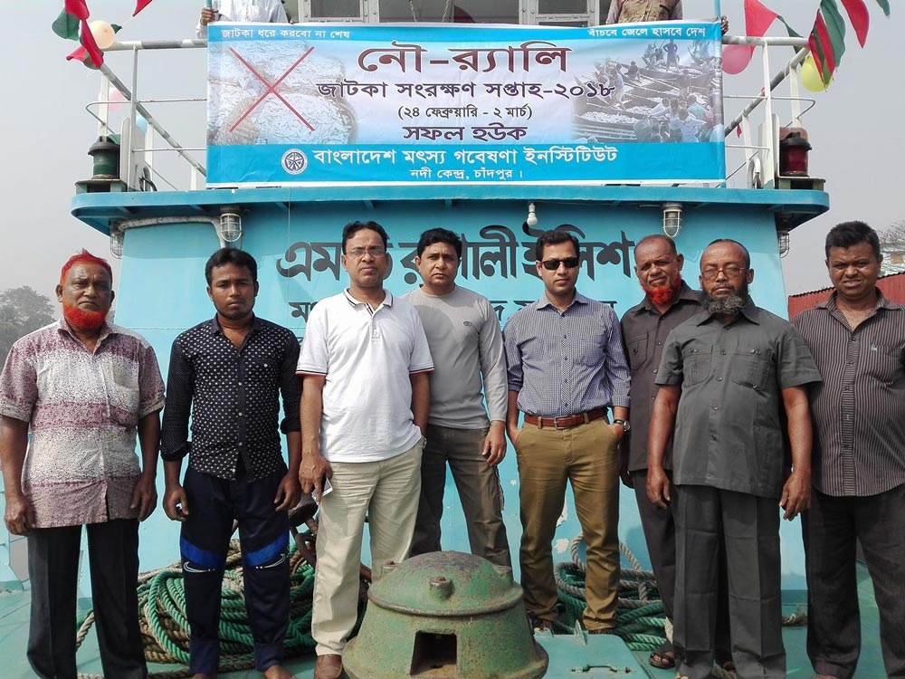
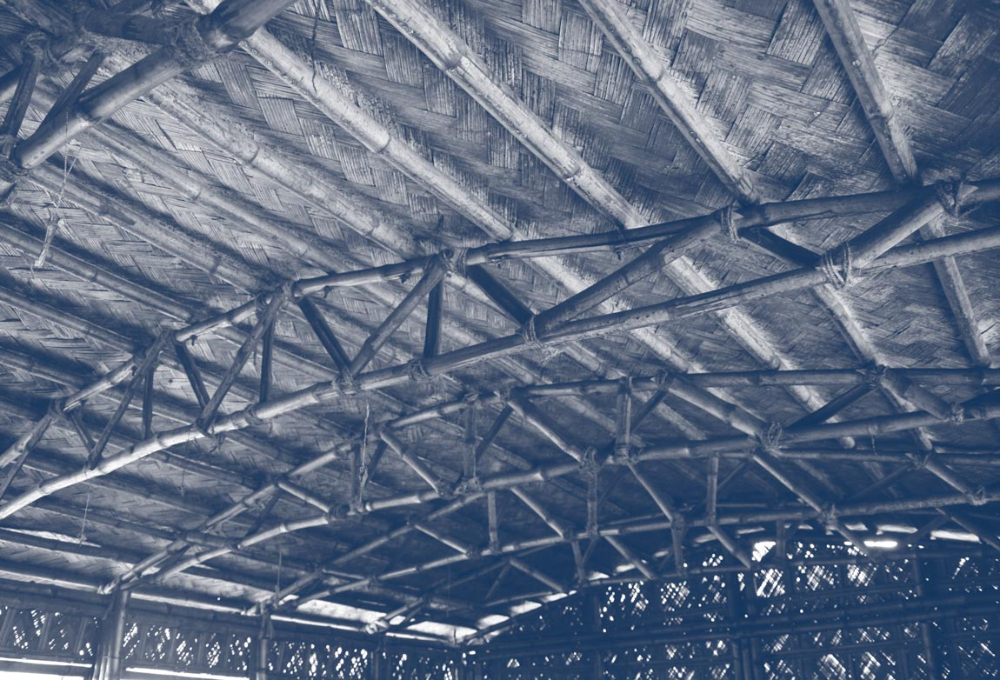
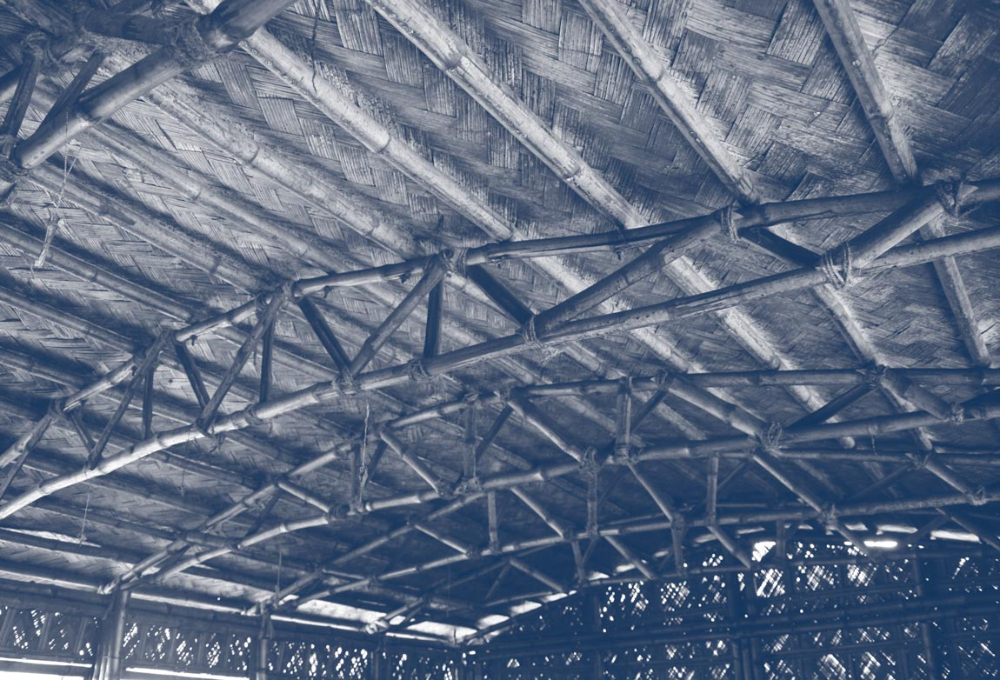
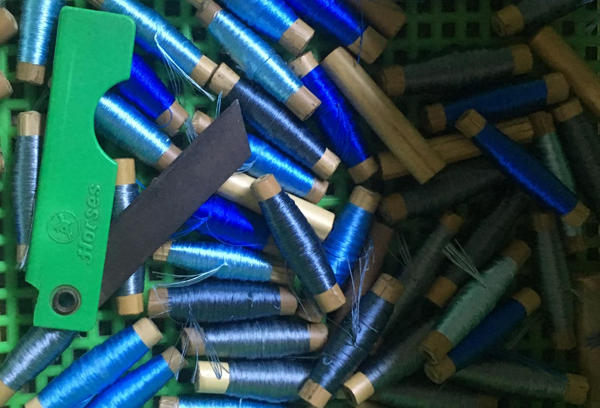
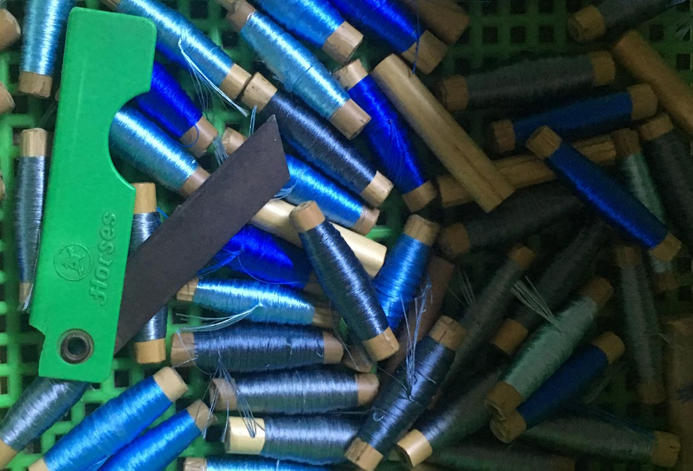

Monsoonal Mult iplicities
Never is a plateau separable from the cows that populate it, which are also the clouds in the sky.
------ Deleuze and Guattari, A Thousand Plateaus, p. 23.
Monsoonal Multiplicities is an exhibition project that brings together texts, maps, photographs and videos generated by Monsoon Assemblages researchers during their five-year intra-action with the monsoon in south and south east Asia. It offers visitors a virtual experience of the monsoon as a multiplicity of entangled beings, energies, infrastructures, lifeworlds, matters, technologies and knowledge practices. It is organized in five rooms - framings, infrastructures, interspecies interlocuters, matters and urban assemblages – that serve as agential cuts through monsoonal encounters. The website has been designed to enable visitors to navigate rhyzomically through these rooms - to scroll down, leap across, return, zoom in, pause, or in other ways intra-act with the material without ever having to return to a home page. Navigation becomes a way of constructing constitutive interrelations across difference, providing an embodied virtual experience of the multiplicitous monsoon.
Hilsa, the national fish of Bangladesh, is entangled with processes of urbanization and industrialization. Construction of dams, barrages, roads, bridges, ports, factories and energy infrastructures impact delta waterworlds. Such anthropogenic activities alter water and sediment flows, intensify nutrient and pollution loads, and disrupt underwater environments. Hilsa are responding in unforeseen and unpredictable ways.

Hilsa and the Monsoon
Known as ilish in Bengali, hilsa are a monsoonal species. They inhabit the entire coastline of the Indian Ocean, but they are most abundant in the upper reaches of the Bay of Bengal. At the apex of the Bay immense monsoonal flows merge with ocean currents and tides creating a unique ecosystem. While hilsa spend most of their life in the Bay they migrate to the rivers of the delta to breed. The rains of the south‐west monsoon act as an ecological trigger, initiating their spawning migration. Hilsa used to migrate to the upper reaches of all the major rivers, but in recent times their range has dramatically reduced. The altered mobilities of the hilsa are an indicator of shifting human-nonhuman relations
“The Ilisha frequents the Bay of Bengal and the large salt watef estuaries of the Ganges, and in the rainy season ascends the largef rivers to spawn. I have seen if as high as Agra and Kanpur, buf … about Calcutta and Dhaka if is in the utmost abundance anf perfection”
------ (Francis BuchananHamilton, 1822: 244).


The Fisher
Fishers from the Meghna River ascribe changing hilsa migration patterns to the inhospitable river environment. The Farakka Barrage, commissioned in 1975 by the Indian government, transformed Bangladesh’s rivers. The barrage reduced the velocity of monsoonal flows leading to siltation and sedimentation downstream, restricting hilsa movements. Fishers are also concerned by illegal sand mining, fuelled by Dhaka’s booming construction industry. Flotillas of sand dredgers vacuum gravel and sand from the river, altering its bathymetry and disturbing fish migration routes. In response to changing hilsa movements, fishers are forced deeper into the turbulent Bay of Bengal.


“The river has changed;
the difference is like day and night.
When we were children the flow was much higher than at this time”
------ Hilsa Fisher, Chandpur

Huge flotillas of sand dredgers proliferate along the Meghna River just below Dhaka. Dredging increases turbidity and underwater noise, disturbs plankton and endangers fish


Fishing the Meghna: Fishers attune themselves to rivers, tides, weather and fish migration. Through embodied practices they gain intimate knowledge of hilsa and their monsoonal environments.
The Scientist
In recent decades, rapid urbanization and the increased purchasing power of the urban middle class has led to greater fish consumption. Increased demand for the “queen of fish” resulted in unsustainable fishing practices with hilsa numbers declining from the 1970s onwards, reaching record lows in the early 2000s. Alarmed by diminishing numbers and changes to migration patterns, scientists mobilised to conserve the species. To curb unsustainable fishing, and regulate supply to urban markets, scientists developed annual ban periods to “save mother hilsa”.

BFRI Hilsa Research: Bangladeshi scientists involved in hilsa research spend hours, days and weeks on boats, often working alongside traditional fishers, netting, weighing, examining and observing fish.
The strict ban period is March to April. We say, now it’s your turn to go back to the ocean. Go peacefully, without interruption, without problem
------ Fisheries researcher, Dhaka


Located at Chandpur, at the confluence of the Padma and Meghna rivers, the Bangladesh Fisheries Research Institute (BFRI) Riverine Station is at the forefront of hilsa research.
The Cook
Hilsa is cooked in a myriad of ways, but knowing how to buy hilsa is an essential part of the cooking process. Not all hilsa are the same, river hilsa are tastier than marine hilsa. The fish gain fat and protein and take on the taste of the river as they move upstream; the further they travel the tastier they become. As their taste peaks at the height of the rains, for many, hilsa is the taste of monsoon season. Their taste varies from river to river. Hilsa from the river Padma, are thought to be the tastiest due to the characteristics of the river water. However, the taste of hilsa is changing. Infrastructural interventions alter river ecologies, affecting the taste, smell and texture of fish, which is sensed by those who consume them.
When you go to the market, the first thing you learn is how to spot a Padma from a Meghna hilsa. These are things you learn almost through osmosis if you are born here
------ Amateur cook, Khulna
The Activist
Hilsa can no longer be found in the Buriganga River, one of the most polluted rivers in the world. Its waters are a glossy blue-black, covered with rampant islands of water hyacinth which feed on contaminants. The river carries an all-pervasive stench from effluents spewed from tanneries, garment factories, cement plants and fertiliser manufacturers along its banks. The flushing effects of the monsoon carries pollutants downstream, affecting fish and people who depend on them. Environmental activists believe pollution is changing hilsa movements. Hilsa have a highly developed olfactory organ, making them sensitive to smell and taste. Pollutants may impact their olfactory memory and influence migration routes.
Hilsa are extremely sensitive ... They can smell hydrogen sulphide, that rotten egg smell, which means they never come to Buriganga or Dhaka city rivers anymore
------ Environmental activist, Dhaka
Human-hilsa Entanglements
Following the hilsa highlights the multiplicity of ways in which fish, people, weather, infrastructure, cities and materials are entangled with one another. As a transboundary monsoonal organism, the hilsa is loved across geographies, nationalities, religions, environments and culinary traditions. The decline of this glittering, silver-scaled fish will impact environments and ecologies across the region, irrevocably changing human and nonhuman lifeways in the process.
Mache Bhate Bengali
“Fish and rice make a Bengali”

Earth goddesses, snakes
and the monsoon

Snakes are ectothermic beings; temperature, humidity, cloud cover and precipitation influence their behavior. Snake activity increases during monsoon months and snake bite incidents surge as human-snake encounters intensify. Snakes and nagas, serpent-like beings, are associated with water, rain and fertility across the Indian subcontinent. Snake rituals reveal entanglements between snakes, people, belief systems and the monsoon.

Mariamman, snakes and anthills
Mariamman is a rain goddess, invoked to bring rains to Tamil Nadu. Temples to the goddess are often made around anthills where snakes, particularly cobras, are believed to dwell. Both snakes and anthills are forms of the goddess. Milk is given as ‘cooling’ offerings to snakes, and mounds are adorned with yellow flowers and vermillion. Historically Mariamman was the goddess of smallpox, a seasonal disease that proliferated during the dry and windy month of Aadi, and subsided with monsoon onset. Songs to the goddess compared pox-affliction to snakebites. Mariamman is still immensely popular in Chennai


Manasa, snake charmers
and waterways
Bede are skilled snake catchers in Bangladesh who remove poisonous snakes that infest Bengali villages during monsoon season. Bede lead nomadic lives, moving on boats across the riverine landscape of the Bengal delta. They charm snakes and cure snake bites as they travel. Monsoon season is important for the Bede as this is when snakes are most active and river water is high, allowing easy movement. While charming snakes, they perform rituals and songs to the Bengali snake goddess Manasa. In recent times, rivers have deteriorated and snake populations have declined making Bede nomadic life increasingly challenging.


Naga goddesses, snake pagodas
and mud volcanoes
Snake and naga worship was part of pre-Buddhist animist traditions in Myanmar. A place with lingering associations to naga beliefs are the mud volcanoes of Minbu, known as Naga Pywet Taung, or ‘mountain where the naga breathes’. Worshippers pour milk libations into the bubbling mud pools and give offerings to goddess Naga Mae Daw. Minbu is located near the Myanmar oil fields of Yenangyaung. They provide tangible connections to the treasures of the earth that nagas are rumoured to guard. Although nagas dwell in the underworld, they are also believed to have power over wind and rain.


Human-snake entanglements
Snake rituals and associated mythologies embody intimate connections between humans, snakes, weather and environment that have emerged over time. These practices are not just symbolic, but maintain ties between humans, nonhumans and their earthly ecologies. In recent years there has been a significant decline in snake populations throughout the Indian subcontinent and around the globe. South Asia is where most urban growth is expected to occur in coming decades, with further consequences for nonhuman species. Snakes are particularly at risk and although rituals offer ways of ‘making kin’ with snakes, they may not be sufficient to ensure their future survival.


Matters and Matterings

Introduction
Year after year, as they sweep across the Indian terrain, the southwest and northeast monsoons act as architects of seasonal change. Like the monsoon itself, these changes are both material and social. A project of extremes, monsoonal heat and rain produce matter, labour, exploitation and resistance. Salt, one of monsoonal India’s oldest and most reliable resources, is one such material and social practice. Whether found in a geologic deposit or harvested as a seasonal fruit of the monsoonal sun, the need for salt, an indispensable ingredient of life, gave rise to colonial conquest and heralded the call to battle for independence.
Write Caption: Sed ut perspiciatis unde omnis iste natus error sit voluptatem accusantium doloremque laudantium, totam rem aperiam, eaque ipsa quae ab illo inventore veritatis et
Salt, a monsoonal material
The seasonal passage of the southwest and northeast monsoons determines both the timeline and the bounty of India’s salt economy as it splits the arc of the sun’s annual march between the east and west coasts of the subcontinent. Tuned to the rhythms of the monsoons, the extraction of salt is aided by dry monsoon winds and their magnification by the pre- and post-monsoon sun. Today, India produces the third largest amount of salt in the world, an exponential growth since Independence in 1947.


Write Caption: Sed ut perspiciatis unde omnis iste natus error sit voluptatem accusantium doloremque laudantium, totam rem aperiam, eaque ipsa quae ab illo inventore veritatis et
Exploiting salt
In the wake of victory at the Battle of Plassey in 1757, the English East Indian Company (EEIC) gained control of the salt works near Kolkata. Two years later they imposed the first official Salt Tax on the works, doubling land rent and levying a transport tax on manufacturers and traders. After the Indian Rebellion a century later, the British Indian Government formalised the legal and physical infrastructures of salt management initiated by the EEIC with passing of the Salt Act of 1882.


Write Caption: Sed ut perspiciatis unde omnis iste natus error sit voluptatem accusantium doloremque laudantium, totam rem aperiam, eaque ipsa quae ab illo inventore veritatis et
Write Caption: Sed ut perspiciatis unde omnis iste natus error sit voluptatem accusantium doloremque laudantium, totam rem aperiam, eaque ipsa quae ab illo inventore veritatis et
Isolating monsoons
The government monopoly of India’s salt trade was institutionalised by the construction of official salt depots and monitored transportation routes that impeded the rise of rogue producers and distributors. To reduce occurrence of illegal salt production and smuggling between districts, the British constructed an Inland Customs Line, otherwise known as the Great Hedge of India, which extended 2,500 miles from the north of Punjab to the western boundary of Orissa, effectively segregating the salt production of the southwest monsoon from that of the northeast.
“[T]he power to imagine has itself been colonised and dominated so that we understand the fundamental human impulse to be one of conflict rather than communal action.”1

Write Caption: Sed ut perspiciatis unde omnis iste natus error sit voluptatem accusantium doloremque laudantium, totam rem aperiam, eaque ipsa quae ab illo inventore veritatis et
In solidarity with the winds
Barring a brief period from 1694 to 1825, the British public viewed salt taxation as a violation of human rights and unfairly levied against low- income populations. Yet, according to the Salt Tax, it was illegal for anyone who was not an authorised British national to collect and produce salt in India. In 1930 Mahatma Gandhi led a small band of Indian nationals from his hometown Ahmedabad to the coastal village of Dandi. Upon reaching the sea, he reached down and scooped a handful of salt from the sand. This was a direct violation of British Law in India and an act that stoked the fires of Independence.

Write Caption: Sed ut perspiciatis unde omnis iste natus error sit voluptatem accusantium doloremque laudantium, totam rem aperiam, eaque ipsa quae ab illo inventore veritatis et
In solidarity with the winds
Barring a brief period from 1694 to 1825, the British public viewed salt taxation as a violation of human rights and unfairly levied against low- income populations. Yet, according to the Salt Tax, it was illegal for anyone who was not an authorised British national to collect and produce salt in India. In 1930 Mahatma Gandhi led a small band of Indian nationals from his hometown Ahmedabad to the coastal village of Dandi. Upon reaching the sea, he reached down and scooped a handful of salt from the sand. This was a direct violation of British Law in India and an act that stoked the fires of Independence.
“What if we approach social movement action not as targeting existing political power but as experimenting with worlds? What if we see social movement action not as addressing existing institutions for redistributing justice but as the creation of alternative forms of existence that reclaim material justice from below? And, what if this becomes possible not when social movements engage in resistance to power but when they experiment with the materiality of life?”2
Write Caption: Sed ut perspiciatis unde omnis iste natus error sit voluptatem accusantium doloremque laudantium, totam rem aperiam, eaque ipsa quae ab illo inventore veritatis et
1 N. Mirzoeff, “Visualizing the Anthropocene”, Public Culture, vol. 26, no. 2, 2014, p. 219.
2 D. Papadopoulos, Experimental Practice: technoscience, alterontologies, and more-than-social movements, Durham NC, Duke University Press, 2018, p. 3.
A city woven from water
Dhaka is in perpetual dialogue with the monsoon through the hydrological cycle, its very existence woven from and enmeshed within fluctuating monsoon seasons.


Terra-aqueous land
Bangladesh is a fluctuating monsoonal terrain. It is almost half covered in water between June and October each year when it receives huge inflows of water and sediment carried from the Himalayas by the Ganges, Brahmaputra and Meghna Rivers. In addition to this, it is impacted by oceanic dynamics that originate in the Bay of Bengal such as tides, reversing currents, cyclones and storm surges that frequently push seawater many kilometres inland and shape coastal ecologies


Write Caption: Sed ut perspiciatis unde omnis iste natus error sit voluptatem accusantium doloremque laudantium, totam rem aperiam, eaque ipsa quae ab illo inventore veritatis et
Char islands
Bangladesh’s sediment heavy rivers frequently braid or shift, creating precarious, nomadic units of land called chars that cannot be mapped, legally owned or recorded in revenue papers because they move around too quickly and too frequently. Chars have historically been occupied by precarious, marginal people, often without official documents. Those who live on them lead perilous, calamitous lives. When the monsoon breaks and the flow of rivers increase each year, their land frequently deserts them, their shelters are devastated, crops are damaged and livestock washed away. As the river recedes, new chars emerge and fierce, at times violent struggles to occupy them, overseen by local strongmen, ensue.


Dhaka
Dhaka lies at the centre of this terra-aqueous monsoonal terrain on the southern edge of a spur of high ground called the Madhupur Tract. This tract of clay floats above the Dupi Tila aquifer, a subterranean reservoir that provides high quality groundwater to the city. Dhaka is bounded by four rivers and criss-crossed by a meshwork of smaller water courses that are seasonally fed by the monsoon. After independence, it expanded northwards along the clay tract, but, more recently growth has been directed westwards, protected by an embankment along the Buriganga River, and eastwards, where it has displaced agricultural lands, lakes and canals and reshaped their hydrological ecologies

Write Caption: Sed ut perspiciatis unde omnis iste natus error sit voluptatem accusantium doloremque laudantium, totam rem aperiam, eaque ipsa quae ab illo inventore veritatis et


Write Caption: Sed ut perspiciatis unde omnis iste natus error sit voluptatem accusantium doloremque laudantium, totam rem aperiam, eaque ipsa quae ab illo inventore veritatis et
Hydrological
infrastructure
Since the late 1980s, Dhaka East has been the target of speculative urban development driven by the powerful real estate sector. It is an area of low floodplains and marshy lands that are inundated during the monsoon. To prepare land for development, land is elevated above predicted flood levels through a process known as sand pumping. Dredgers suction vast quantities of sand from river beds, which is then pumped from barges via steel pipes into the floodplains and marshlands. Dhaka East is this being reimagined and reformed from the fluid fabric of the monsoon via the extraction and redistribution of sand.


Write Caption: Sed ut perspiciatis unde omnis iste natus error sit voluptatem accusantium doloremque laudantium, totam rem aperiam, eaque ipsa quae ab illo inventore veritatis et
Write Caption: Sed ut perspiciatis unde omnis iste natus error sit voluptatem accusantium doloremque laudantium, totam rem aperiam, eaque ipsa quae ab illo inventore veritatis et
Write Caption: Sed ut perspiciatis unde omnis iste natus error sit voluptatem accusantium doloremque laudantium, totam rem aperiam, eaque ipsa quae ab illo inventore veritatis et
Write Caption: Sed ut perspiciatis unde omnis iste natus error sit voluptatem accusantium doloremque laudantium, totam rem aperiam, eaque ipsa quae ab illo inventore veritatis et
Moghul textiles
Under Moghul rule, Dhaka rose from a humble military outpost to a burgeoning metropolis driven largely by the production of textiles. Royal workshops, with their hub in Dhaka, were established to supervise the manufacture of fine muslin cloth for the court of the Emperor. Over time Dhaka weavers became the most famous in India. Dacca muslin, known as mulmul khas or imperial cloth, gained a reputation for its extraordinary qualities, beauty and fineness. These properties were connected to the city’s monsoonal landscape, in which a particular variety of cotton, locally known as photee, was grown. Temperature and humidity, soil ecology and minerals within the river water imparted it with unique qualities. Weaving was timed in accordance with the humidity of the monsoon and the practice of placing shallow vessels of water beneath looms to keep the fabric moist gave rise to the notion that Dacca muslins were woven under water.


Write Caption: Sed ut perspiciatis unde omnis iste natus error sit voluptatem accusantium doloremque laudantium, totam rem aperiam, eaque ipsa quae ab illo inventore veritatis et
Write Caption: Sed ut perspiciatis unde omnis iste natus error sit voluptatem accusantium doloremque laudantium, totam rem aperiam, eaque ipsa quae ab illo inventore veritatis et


Write Caption: Sed ut perspiciatis unde omnis iste natus error sit voluptatem accusantium doloremque laudantium, totam rem aperiam, eaque ipsa quae ab illo inventore veritatis et
Neoliberal textiles
Following independence in 1971, Bangladesh set in place neoliberal policies that saw an exponential growth in the garment industry. Like the Moghul textile industry had been, the hub of this industry is Dhaka, but unlike it, it supplies cheap clothes to the global market. The modern industry is predicated on the exploitation of cheap labour and what Jason Moore called “cheap nature”.1 Garment production is dependent on water for all steps of manufacturing, from washing and dyeing to textile finishing. Most of the water is sourced from the Dupi Tila aquifer, which is being depleted by millions of cubic metres of water each year. The industry also disposes large quantities of contaminated wastewater into Dhaka’s interlinked rivers and canals. This has meant that many of Dhaka’s rivers have been pronounced biologically dead, with implications for life and livelihoods downstream


Write Caption: Sed ut perspiciatis unde omnis iste natus error sit voluptatem accusantium doloremque laudantium, totam rem aperiam, eaque ipsa quae ab illo inventore veritatis et
Write Caption: Sed ut perspiciatis unde omnis iste natus error sit voluptatem accusantium doloremque laudantium, totam rem aperiam, eaque ipsa quae ab illo inventore veritatis et
The garment industry
and real estate
The timeline of the rise of the garment sector in Dhaka corresponds closely with the rise of the real estate sector. In the 1970s there were only five registered property developers in Dhaka; by 2004, there were 250 and there are now more than 1,500 active companies. The close ties between the two sectors are embodied in powerful diversified business groups that consist of textile and spinning mills, dredging companies, cement and steel manufacturers and property development. These clusters use their power and political connections to pull strings and acquire land and capital. Such conglomerates dominate Bangladesh’s economy and drive Dhaka’s expansion.


Amphibious architecture in the
Bengal floodplain
Arcadia Education Project, South Kanarchor.
Architect: Saif Ul Haque, 2016.
On October 14, 2011, I was taken to see a site for a
prospective project for a preschool on the outskirts of
Dhaka city. After an hour’s drive from the city, the site
was pointed out to me. To my surprise, I could not see
any land; rather what I saw was a flooded river bank.
I exclaimed “I don’t see any land!” This, of course, is
a typical reaction of an architect who would expect
to see a piece of land for a prospective project, not
water. I was then assured land would emerge within a
couple of weeks.2
Jol O Jongoler Kabbo, Pubail, Gazipur.
Architect: Khondaker Hasibul Kabir, unknown.
Jol O Jongoler Kabbo, meaning ‘the rhythm of water
and forest’ is a weekend retreat designed by landscape
architect Khondaker Hasibul Kabir in Pubail, Bangladesh.
Its architecture is constructed as part of a social
waterscape and encourages multi-sensory engagement.
The resort conserves wetlands and a patch of forest and
employs the neighbouring community in management and
maintenance. The retreat is a counterpoint to the traumatic
transformation of the landscape taking place around it in
the name of industrialisation and development.


 

1 J.W. Moore, Capitalism in the Web of Life: Ecology and the Accumulation of Capital , London, Verso, 2015.
2 S. Ul Haque, ‘Being Amphibious in the Bengal Floodplain’, in L. Bremner and J. Cook (eds.), Monsoon [+ other] Grounds, London, Monsoon Assemblages, 2020, p. 137, on the beginnings of his Arcadia Education Project, South Kanarchor, Bangladesh, awarded an Aga Khan Award for Architecture in 2018


 


Write Caption: Sed ut perspiciatis unde omnis iste natus error sit voluptatem accusantium doloremque laudantium, totam rem aperiam, eaque ipsa quae ab illo inventore veritatis et
Write Caption: Sed ut perspiciatis unde omnis iste natus error sit voluptatem accusantium doloremque laudantium, totam rem aperiam, eaque ipsa quae ab illo inventore veritatis et
Write Caption: Sed ut perspiciatis unde omnis iste natus error sit voluptatem accusantium doloremque laudantium, totam rem aperiam, eaque ipsa quae ab illo inventore veritatis et
Kulyd, khals and canals:
constructing the indebted state
Three of ten major world-making rivers that rise on the Tibetan Plateau - the Indus, Ganges, and Brahmaputra – frame the monsoon’s path, from the Indus River’s south-westward flow towards the Arabian Sea, to the eastward confluence of the Ganges and Brahmaputra as they make their way to the Bay of Bengal. Near the entry of each into the Bay, the Ganges and Brahmaputra have given rise to two of south Asia’s historic centres of culture – Kolkata and Dhaka. Each also harbours a colonial history that re-engineered the meteorological relationships of agricultural and economic landscapes, projecting both into the global financial sphere of climate speculation.


Write Caption: Sed ut perspiciatis unde omnis iste natus error sit voluptatem accusantium doloremque laudantium, totam rem aperiam, eaque ipsa quae ab illo inventore veritatis et
Monsoonal grounds
as territorial indebtedness
As one of the first centres of colonial wealth and power on the Bay of Bengal, Kolkata’s riverine and coastal landscape offered British colonisers a unique opportunity to externalise local capital into emerging global markets. The reconstruction of Kolkata’s relationship to the Ganges and its tributaries via local and regionally scaled canal building and marsh reclamation projects laid the groundwork for a meteoro-agro-economics that recast monsoonal grounds as territorial indebtedness. As an indispensable precondition for the commodity economy’s conquest of South Asia’s monsoon driven economy, the construction of canals from Kolkata eastward laid the groundwork for national dependency on international lines of credit and environmental design schemes that extracted debt repayment by perpetuating precarity.


Write Caption: Sed ut perspiciatis unde omnis iste natus error sit voluptatem accusantium doloremque laudantium, totam rem aperiam, eaque ipsa quae ab illo inventore veritatis et
Wealth and weather
Rivers were the original conduits of the monsoon’s materialisation and distributors of wealth and poverty across the meteoro-ecological landscapes of India and Bangladesh. Manipulating the relationship between land and the monsoon was long a project of nation and wealth building. From the thirteenth century onward canals were built to syphon the monsoon away from riverine valleys and onto drier terrain, effectively retooling the nation’s economy. The project of canal building inverted the relationship between wealth and weather that had historically grounded economic and social dynamics.


Write Caption: Sed ut perspiciatis unde omnis iste natus error sit voluptatem accusantium doloremque laudantium, totam rem aperiam, eaque ipsa quae ab illo inventore veritatis et
Creating the indebted farmer:
The Ganges Canal
The construction of the Ganges Canal from 1840 onwards grew the area of India’s irrigated land and reduced Gangetic flows before they could reach Kolkata in the lower delta. With a less reliable relationship to the monsoonal flows of the Ganges, nearby farmland grew less fertile and the farmers more vulnerable to climate variation. As traditional farmers struggled, the industry of credit lending grew and contributed to the colonial reorientation of Kolkata towards the Bay of Bengal and overseas trade. Farmers requested lines of credit for seedsowing and crop harvesting, crafting the rise and fall of India’s money market around the arrival and departure of the monsoon.

Write Caption: Sed ut perspiciatis unde omnis iste natus error sit voluptatem accusantium doloremque laudantium, totam rem aperiam, eaque ipsa quae ab illo inventore veritatis et
Creating the indebted farmer:
moneylenders and Insurance
Canals have always been agents of neoliberal ambition, bringing the environment into marketdriven systems of policy making that capitalise on the variability of earth and climate systems. Securitisation, or insurance, is one of the primary techniques for turning debt into tradable commodity. Working in tandem with the construction of canals to secure the productivity of India’s soils, the risks of a volatile climate were offset with an infusion of credit capital, promising increased land and power in turn for any failed debt repayment. To secure against market failure, the government made provisions for agricultural insurance, yet, structured around famine, not drought, it failed to reduce the economic significance of weather
Debt acts as a ‘capture’, ‘predation’, and ‘extraction’ machine on the whole of society, as an instrument for macroeconomic prescription and management, and as a mechanism for income redistribution. It also functions as a mechanism for the production and ‘government’ of collective and individual subjectivities. 1

Write Caption: Sed ut perspiciatis unde omnis iste natus error sit voluptatem accusantium doloremque laudantium, totam rem aperiam, eaque ipsa quae ab illo inventore veritatis et
East of Kolkata and
the creation of the indebted state
To expand its market share and control trade through the Bay of Bengal, the English East India Company turned to Dhaka, the historic city residing at the confluence of monsoonal rivers to the east of Kolkata. The ecology, urban form, and economic security of Dhaka was formed and re-formed by ever-shifting courses of monsoonal discharge. To minimise the impact of each shift, canals and embankments were constructed to offset any economic blows to the form and function of the city and the international markets tied to its economy. It is estimated that investment in canal and embankment projects in Bangladesh carry one of the highest percentages of international funding of any concrete infrastructure worldwide
[T]he environment of the city (both social and physical) is the result of a historical geographical process of the urbanisation of nature. Excavating the flows that constitute the urban would produce a political-ecology of the urbanisation of nature.2

Write Caption: Sed ut perspiciatis unde omnis iste natus error sit voluptatem accusantium doloremque laudantium, totam rem aperiam, eaque ipsa quae ab illo inventore veritatis et
Conclusion
Across monsoonal South Asia, hydrological management infrastructures were constructed to circumvent the inherent variability of the weather through the engineered extraction of meteorological materials into concrete forms of management. Canal networks created a monsoonal ecology of meteoro-agro-economics as central to today’s global marketplace of climate finance as it was to yesterday’s structuring of monsoonal agriculture. By exploiting the monsoon’s indeterminacies, developers, consultants, and politicians reorganise the future by concentrating power and capital flows in the present. Each recurring disaster generates a perceived scarcity of time that expedites the conditions necessary for hurried credit swaps and foreign direct investment that re-inscribe neocolonial power relations. Canal projects re-designed hydro-meteorological relations and monetised the monsoon, laying the groundwork for the current, shared crisis of climate disaster and debt.
“[C]ombined with soaring insurance industry profits… as well as super profits for the oil industry (which grow with each new crisis), the disaster economy may well have saved the world market from the fullblown recession it was facing on the eve of 9/11”.3
Write Caption: Sed ut perspiciatis unde omnis iste natus error sit voluptatem accusantium doloremque laudantium, totam rem aperiam, eaque ipsa quae ab illo inventore veritatis et
1 M. Lazzarato, The Making of the Indebted Man: An Essay on the Neoliberal Condition, J.D. Jordan (trans.), Amsterdam, Semiotext(e), 2012, p. 29.
2 M. Kaika, City of Flows: modernity, nature, and the city, New York and London, Routledge, 2005, p. 25..
3 N. Klein, Shock Doctrine: The Rise of Disaster Capitalism, New York, Picador, 2007, p. 17.